User’s guide: WaveDec¶
A typical command to run WaveDec looks as follows:
$ WaveDec.py --config_file /path/to/config/file/MyConfig.yaml
As a command line option we specify the path and name of a configuration file. This configuration file contains all the settings that you may wish to specify, including input/output and processing parameters. The syntax of this configuration file is described below.
Input files¶
Configuration file¶
As described in the quick start guide, few parameters can be passed via command line. However you will need to provide a configuration file to specify important processing options.
Remember that all the parameters are optional. If you are unsure about a specific processing option, do not set it and WaveDec will attempt to do its best.
The configuration file is written in YAML. The YAML syntax is simple and it is sufficient to look at the commented example below.
################################
## This is an example configuration file to be used with WaveDec
##
################################
## Input and output options
################################
INPUT: /path/to/input/files # Folder containing input SAC files. Default is current folder <.>
OUTPUT: /path/to/output/files # Folder where output files will be saved. Default is current folder <.>
################################
## Processing options
################################
Twindow: 25 # Duration, of the analysis window, in seconds. Default is <25>
MaxWindows: 50 # Maximum number of time windows to be analyzed. Set <0> for largest possible. Default is <0>
Fmin: 0.5 # Smallest frequency to analyze, in Hertz. Default is <10/Twindow>
Fmax: 15 # Largest frequency to analyze, in Hertz. Default is <min(20, 0.5/Ts)>
Fspacing: lin # Linear <lin> or logarithmic <log> frequency spacing. Default is <lin>
Fnum: 50 # Number of frequencies, between Fmin and Fmax, to be analyzed.
# Default is <50>. Set Fnum: 0 to model all DFT frequencies.
Vmin: 50 # Smallest velocity considered in m/s. May speed up computation. Default is <50>
MaxWaves: 5 # Maximum number of waves to be modeled for each time window at a given frequency. Default is <3>
ModelRayleighWaves: true # Boolean indicating whether to model or not Rayleigh waves. Default is <true>
ModelLoveWaves: true # Boolean indicating whether to model or not Love waves. Default is <true>
ModelNoise: true # Boolean indicating whether to allow or not a window without Rayleigh and Love waves. Default is <true>
################################
## More processing options (less used)
################################
# Tstart: 10 # Ignore the initial Tstart seconds of the recording. Default is <0>.
# Kmax: 0.05 # The largest wavenumber to analyze, in 1/m. Default is inferred from array geometry.
# Kstep: 1e-3 # Step size for grid search along wavenumber axis, in 1/m. Default is inferred from array geometry.
# Estep: 0.1 # Step size for grid search along ellipticity angle axis, in rad. Default is <pi/90>.
# Ts: 0.01 # Sampling time in seconds. This option will override what is found in the SAC headers.
# Gamma: 0.2 # Controls model complexity. (0 for pure ML, 1 for BIC, other values for intermediate strategies). Default is <1>
# ModelVerticalWaves: false # Boolean indicating whether to model or not Vertical-component-only waves. Default is <false>
# If ModelVerticalWaves = true, it will be forced ModelRayleighWaves = ModelLoveWaves = false
# MaxIterations: 5 # The maximum number of iterations for iterative wave estimation. Default is <10>
## End of ExampleConfig.yaml
The example configuration file shown above is available here.
The frequencies that are actually processed by WaveDec may be different from what you expected. WaveDec will always process discrete Fourier transform (DFT) frequencies. The frequency actually processed are chosen among the possible DFT frequencies in order to loosely match what is requested by the user. The possible DFT frequencies are given, for example, by the Python function numpy.fft.fftfreq(Twindow/Ts, d=Ts).
Warning
The configuration file is case sensitive.
Warning
The syntax of the configration file is not checked properly. Many mistakes will go unoticed eg: F_min or fmin instead of Fmin. Please check info printed when WaveDec starts or the log file to make sure the configuration file is read correctly.
Data¶
The program reads as input binary SAC files, both big- and little-endian. Certain fields of the SAC header must be set with the right values.
In the following table a list of the SAC header fields used by WaveDec.
Field name |
Word |
Value |
Comments |
|---|---|---|---|
DELTA |
0 |
Sampling interval [s] |
Must be the same in all SAC files of the provided input folder
The value found in the header can be overridden within the Configuration file
|
NPTS |
79 |
Number of samples |
Must be the same in all SAC files of the provided input folder
|
USER7 |
47 |
Easting [m] |
 coordinate in meters in a Cartesian coordinate system coordinate in meters in a Cartesian coordinate systemE.g., Swiss coordinate system, East–West
|
USER8 |
48 |
Northing [m] |
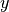 coordinate in meters in a Cartesian coordinate system
E.g., Swiss coordinate system, North-South
|
USER9 |
49 |
Elevation [m] |
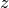 coordinate, station elevation. Not in use.
|
KCMPNM |
129 |
Component code |
Valid codes for the components are:
Vertical ():
[Z, UDZ, BHZ, EHZ, HGZ, HHZ, EH1, EH4]East-West ():
[E, EWX, BHE, EHE, HGE, HHE, EH3, EH6]North-South ():
[N, NSY, BHN, EHN, HGN, HHN, EH2, EH5]Rotation around East-West ():
[ROTX, RX]Rotation around North-South ():
[ROTY, RY]Rotation around Vertical ():
[ROTZ, RZ] |
About polarity. On the vertical component a positive sign of the signal implies an upward motion. On the east-west component an eastward motion. On the north-south component a northward motion.
More documentation on the SAC header is found here.
Missing files (e.g., a sensor having recorded only one or two components) are not an issue. If the recording from a specific sensor/component is unusable, simply remove the corresponding file and leave the good ones in the INPUT folder.
Processing¶
After reading the configuration file and the input files WaveDec will start processing the data. The configuration parameters in use are printed at statup. Check wheather your configuration file was read properly!
An estimate of the processing duration is printed and updated on the console. As soon as the processing of a signal window is completed, estimated parameters are written to file immediately in the OUTPUT folder. You may check and plot intermediate results at any time.
To terminate the processing prematurely press CTRL+C. Starting again the processing will overwrite the output files and start the processing from the beginning of the recording.
Model selection: Love wave, Rayleigh wave, or nothing?¶
One strength of WaveDec is the ability to model multiple waves at the same time (See Benefit of joint modeling Rayleigh and Love waves for a motivation). This approach is called wavefield decomposition, hence WaveDec. The algorithm gradually increases the number of waves modeled up to a maximum number specified by MaxWaves. The number of waves effectively modeled is in general different at different frequencies and in different time windows.
When decomposing the wavefield WaveDec has to choose whether to fit a Love wave, a Rayleigh wave or to stop adding waves. This is a model selection problem. The Bayesian Information Criterion (BIC) is used to make this choice. In a nutshell, the BIC criterion selects the model with smallest BIC value. The BIC value is defined as

where is the model likelihood,  is the number of model parameters, and 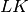 is the number of measurements. The quantity describes the goodness of fit of our model. The quantity is a penalty term related to the complexity of the model.
is the number of model parameters, and 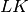 is the number of measurements. The quantity describes the goodness of fit of our model. The quantity is a penalty term related to the complexity of the model.
The algorithm iteratively consider the three following possibilities:
Should a Love wave be added to the current model? (Assuming that
ModelLove: true)Should a Rayleigh wave be added to the current model? (Assuming that
ModelRayleigh: true)Should we stop adding additional waves? (Assuming that
ModelNoise: true) And/or was the maximum number of wavesMaxWavesreached?
For each of these three possibilities, corresponding to three possible models of the wavefield, the BIC value is computed. The model corresponding to the smallest BIC value is chosen.
When doing model selection, we want to avoid underfitting or overfitting the data.
Setting ModelNoise: false is not recommended as it may lead to overfitting the data. In fact, WaveDec is forced to model exactly MaxWaves waves. It will not be able to create a model with less waves.
When WaveDec is allowed to model fewer than MaxWaves (that is, with the flag ModelNoise: true –recommended choice) then the result will exhibit less outliers because most of the outliers have been rejected.
However, we observed that in certain circumstances this may lead underfitting and loosing information from weaker waves (e.g., higher modes, high frequencies, especially in active surveys). We therefore introduce another optional parameter enabling a more aggressive model selection strategy.
We introduce the parameter to tune the result to achieve more or less complex models. It is controlled with the parameter Gamma in the configuration file. The new model selection strategy chooses the model with smallest
A small 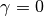 reduces the penalty for a complex model. Model selection will be more aggressive and favour more complex models (i.e., more waves).
For the ML criterion will be used for model selection. This will lead to greatly overfit the data. For 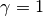 the standard BIC approach is followed. Setting allows a more aggressive strategy compared to pure BIC, thus including more models from weaker waves but also more outliers.
Tip
Our suggestion is to model jointly Love and Rayleigh wave (and the noise model) with the default BIC model selection criterion. Setting MaxWaves to 3 or 5 appears to work well.
Tip
If your output files are empty or present very few waves, try with a smaller Gamma (e.g. Gamma: 0.5, Gamma: 0.1…). In our experience, this was necessary at very few passive survey sites and at most active survey sites.
Speeding it up¶
While it is recommended that you process multiple waves jointly, you may find it too time consuming. This section is about choosing processing options to obtain results faster. It may be a good idea for a quick preliminary analysis of your data.
Reduce the number of waves. In the configuration file, set
MaxWaves: 1
so that a single wave is fitted for each time window / frequency. This prevents the software from iteratively estimate wave parameters. Still, for each time window / frequency both Love wave and Rayleigh wave fit are attempted and only the best one is kept.
Process different waves separately. Instead of running one processing round modeling both Love waves and Rayleigh waves it may be faster to run two separate runs. You will need to create two separate configuration files.
In the first run, only Love waves are analyzed and the configuration file looks like:
ModelRayleighWaves: false ModelLoveWaves: true ModelNoise: true
In the second run, only Rayleigh waves are analyzed:
ModelRayleighWaves: true ModelLoveWaves: false ModelNoise: true
Output files¶
The output is saved to CSV files in the directory specified in the configuration file by OUTPUT. The output files can be opened with a spreadsheet or with a simple text editor.
Estimated wavefield parameters¶
Output with the estimated parameters is written to disk after each time window is processed. Therefore you do not need to wait for the end of the elaboration to see partial results.
The output file for Rayleigh waves, RayleighWaves.csv, looks like this:
# WaveDec output file
# Frequency Amplitude Wavenumber Velocity Azimuth EllipticityAngle
# [Hz] [a.u.] [1/m] [m/s] [rad] [rad]
3.450e+00 2.290e-03 7.072e-03 4.878e+02 2.856e+00 -6.319e-01
3.950e+00 2.637e-03 2.063e-03 1.914e+03 -1.938e+00 4.604e-01
4.199e+00 3.114e-03 1.793e-02 2.342e+02 2.854e+00 2.968e-01
4.699e+00 2.055e-03 2.162e-02 2.173e+02 2.965e+00 6.162e-01
4.899e+00 2.691e-03 2.283e-02 2.146e+02 2.886e+00 5.148e-01
5.149e+00 2.099e-03 7.524e-03 6.844e+02 -5.877e-01 -1.407e+00
5.649e+00 1.697e-03 3.014e-02 1.875e+02 2.278e+00 9.730e-01
Comment lines begin with #. On each row columns are separated by a tabulation character \t.
Each column of the CSV file is described in the following table.
Column name |
Unit |
Description |
|---|---|---|
Frequency |
Hertz |
The frequency
 at which the processing was performed at which the processing was performedNo matter what the frequency options provided in the configuration file are, the frequencies actually processed always correspond to Discrete Fourier transform (DFT) frequencies, i.e. where
 is a positive integer and is the sampling interval. is a positive integer and is the sampling interval. |
Amplitude |
Same unit as input |
The ML estimate of the wave amplitude
 The estimated amplitude is always greater than zero .
|
Wavenumber |
1/meter |
The ML estimate of the wavenumber
The estimated wavenumber is always greater than zero
 . . |
Velocity |
meter/second |
The ML estimate of the velocity of propagation,
|
Azimuth |
radian |
The ML estimate of the azimuth
 It is a value in the interval . The azimuth is measured counterclockwise from the
(east) axes.E.g. for east, for north-east, for north.
The wavevector is and points in the direction of propagation (not in the direction of arrival).
|
EllipticityAngle |
radian |
The ML estimate of the ellipticity angle
 of a Rayleigh wave of a Rayleigh waveIt is a value in the interval . Positive for prograde particle motion, negative for retrograde motion.
The ellipticity angle is related to the H/V ratio as .
|
A very similar output file is generated for Love waves (LoveWaves.csv).
Caution
The name of the output files should not be changed as it is needed by wdPicker.py when analysing the files.
Resolution limits¶
The file ArrayResolutionLimits.csv contains the resolutions limits of the array.
The study of resolution limits is an intricate matter. The resolution limits provided here should be considered as approximate and indicative only. Good results may show up outside the resolution limits, and bad results inside the limits. Be wise and use your expertise.
Let 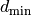 and 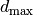 be the smallest and the largest interstation distance within the array stations ( is also known as array aperture).
The smallest and largest resolvable wavenumbers are defined (in 1/meter) as and  (As suggested in Asten and Henstridge [1984]).
(As suggested in Asten and Henstridge [1984]).
Tip
The resolution limits are computed as 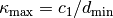 and 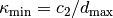. The value of  and 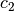 can be changed in the file
and 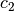 can be changed in the file wdSettings.py.
Equivalently, in velocity at the frequency the limits are and .
The columns of ArrayResolutionLimits.csv have the following meaning
Column name |
Unit |
Description |
|---|---|---|
Frequency |
Hertz |
Frequency
|
Kmin |
1/meter |
Smallest resolvable wavenumber
|
Kmax |
1/meter |
Largest resolvable wavenumber 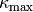
|
Vmin |
meter/second |
Smallest resolvable velocity
|
Vmax |
meter/second |
Largest resolvable velocity
|
Array Layout¶
The file ArrayLayout.csv contains the coordinates of the sensors.
The columns of ArrayLayout.csv have the following meaning
Column name |
Unit |
Description |
|---|---|---|
Easting |
meter |
|
Northing |
meter |
|
Elevation |
meter |
Analysis of the output files¶
The script wdPicker.py allows to visualize and perform some analysis of WaveDec output files. See User’s guide: wdPicker for details.